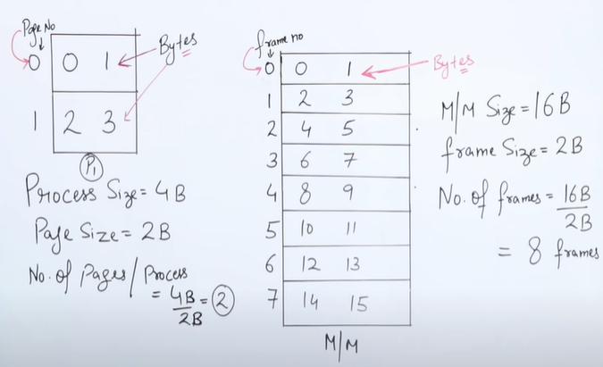

Paging- Non Contiguous Memory Allocation. i.e allows the physical address space of a process to be non contiguous.
- Local Address space(process) is divided into equal size called pages
- Physical Address space(RAM) is divided into equal size known as frames



Paging implementation with Translation look-aside buffers(TLB's)
Now abhi tak ham log jo Logical -> Physical address conversion kar rahe the to usme we were using page table which itself is stored in main memory. So iski wajah se time zyada lag raha tha.
For exampleeach bit ke liye ham memory ko two times access kar rahe the ( 1) Page table dekhne ke liye 2)Physical address se value lane ke liye )
To is process ko fastkarne ke liye we are using Cache Memory(Translation look aside buffers). So now page table will be stored in Cache/TLB
 Total time: HIT(TLB+X)+MISS(TLB+X+X)
Total time: HIT(TLB+X)+MISS(TLB+X+X)
To sab se pehle TLB me dekhte hai frame number agar mil jata hai to Frame Hithota hai
Warna Frame Miss hota hai then ham log page table stored in RAM pe jana padega aur wanha se lena padega

Inverted Paging
>We know that for each process(Say P1,P2...) we have to maintain page table(T1,T2...) for the ease of address transformation
>And if the process is in main memory then its page table need to be stored in the main memory at the same time. i.e lets say for 10 process which are currently running in main memory we have store 10 page table and we know that main memory is limited and here instead of storng data we are storing page table in main memory which can be said as misuse of memory.
>To solve this issues we use Inverted Paging
>Here the idea is to create a single/global page table for all the process
>Only problem here is searching time

Hierarchical/Multilevel Paging
>Multilevel paging is a paging scheme which consists of two or more levels of page tables in a hierarchical manner.
>The entries of the level 1 page table are pointers to a level 2 page table and entries of the level 2 page tables are pointer to a level 3 page table & so on.